Welcome to the standardized digital Prakriti classification system. Based strictly on the Standard Operating Procedures (SOPs) developed by the Central Council for Research in Ayurvedic Sciences (CCRAS), Ministry of Ayush, Government of India.
Participant Information & Consent
Annexure - II: Official Consent Cum Information Sheet
Dear Participant,
You are being asked to undergo an assessment of Prakriti (body constitution). During this examination, you will be asked a battery of questions related to your personal habits, efficiency, likings, and dislikings.
You will also be examined for your physical characteristics (hair, skin, eyes, forehead, voice, body morphology, and gait). The findings will help determine your metabolic constitution and provide a lifestyle and dietary guideline befitting you.
Confidentiality: Your details will be kept confidential and processed strictly for assessment. By checking the box below, you signify that in full consciousness and senses, you give your consent for the Prakriti assessment.
General Measurements & Exclusions
Physical Built & Angulapramana calculations
4-finger width excluding thumb
Since your weight/appearance has changed due to illness or other factors, please input your weight during healthy conditions for accurate classification.
Ayurvedic Anthropometrics & Body built
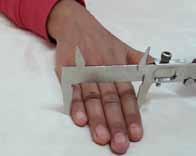
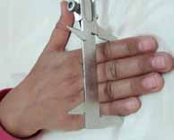
Body Mass Index (BMI):23.9 (Normal)
Prakriti Built Classification:None (0 mark)
Angula Standard Height (84 Angulas):157.5 cm
Angula Height Range:150.0 cm (Short) - 165.0 cm (Tall)
Observe exposed parts (forearms, hands, shins) for highly visible veins and prominent tendons.Ref: Charaka Samhita Vimana Sthana 8/98. Confounder: aging, varicose veins.
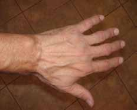
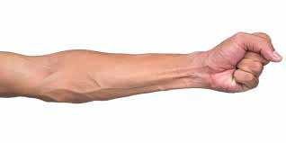
2. Sukumara Gatra (Delicate Body Sensitivity)
Determine if the participant has delicate appearance and/or extreme sensitivity to hot spicy foods and summer.Ref: Charaka Samhita Vimana Sthana 8/97, HT Sharira 3/98.
3. Maha-Lalata (Broad Forehead)
Forehead vertical height (eyebrow line to natural hair line) is broader than 4 fingers of the participant.Ref: Ashtanga Hridaya Sharira Sthana 3/97. Confounder: baldness.
Skin Characteristics
4. Twak Varna (Skin Complexion)
Examine skin in natural light. Check covered areas (like inner arm) if exposed areas are tanned.Ref: Charaka Vimana 8/97, Sushruta Sharira 4/68. Excludes: jaundice, anemia.
Dhusara / Krishna
Dusky or Dark
Gaura Pitanga
Fair with Yellowish tinge
Gaura Gatra
Milky White / Fair Gold
5. Twak Texture (Dryness & Smoothness)
Evaluate the natural texture of skin, checking for cracking, dryness, or smooth unctuous clear skin.Ref: Charaka Samhita Vimana Sthana 8/96.
Observe face/neck/arms. Positive if 5-6+ moles present, or there is frequent tendency to develop them.Ref: Charaka Samhita Vimana Sthana 8/97.
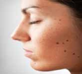
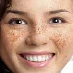
7. Kshipravali / Shighravali (Early Wrinkling)
Early appearance of wrinkles around eyes (crow's feet) before the age of 40.Ref: Charaka Vimana 8/97, AM Sharira Sthana 8/9.
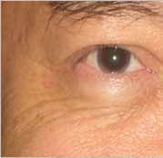
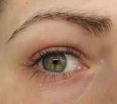
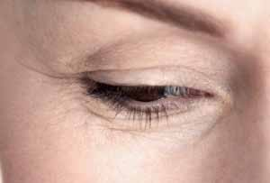
8. Ushmanga / Alpa Santapa (Feel on Touch)
Feel temperature of the dorsal surface of participant's hand. Suffer from frequent mouth ulcers (>2-3 times/year)?Ref: AH 3/90, Charaka Vimana 8/97. Note: Ushmanga & Ushnamukha = max 1 mark.
Joints & Muscles
9. Anavasthita Sandhi (Undue Movement of Body Parts)
Observation of frequent, involuntary movements of joints, jaw, eyebrows, lips, eyes, tongue, head or hands.Ref: Charaka Samhita Vimana Sthana 8/98. Confounder: arthritis, hypermobility.
10. Sashabda Sandhigami (Sound on Movement)
Does the participant experience cracking sounds in knee, ankle, shoulder or toe joints during normal movements?Ref: Charaka Samhita Vimana Sthana 8/98. Exclude: active joint injury or arthritis.
11. Shithila Mridu Mamsa (Lax Muscles)
Inspect forearm and calf muscles. Are they loose, flabby or lacking firm tone (lax)?Ref: Charaka Vimana 8/97, Sushruta Sharira 4/68. Confounder: sports/bodybuilders.
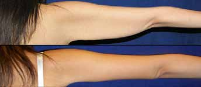
Eye Predictors
12. Eye Size & Shape
Observe the size of the eyes. Big eyes show a small white sclera visible at the bottom of the black cornea.Ref: AS Sharira Sthana 8/6, 12.
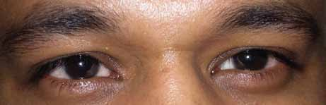
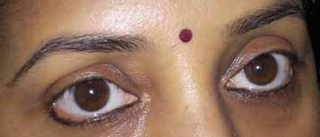
13. Eye Texture (Dryness & Irritation)
Does the participant often have roughness, dryness, irritation, eye fatigue, or frequent blinking?Ref: AH Sharira Sthana 3/88.
14. Eye Sclera Colour
Observe the color of the sclera (white portion of eyes) in natural light.Ref: AH 3/88, Sushruta 4/68.
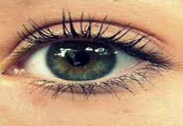
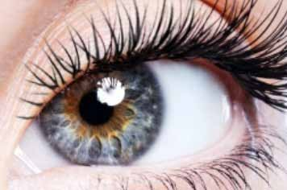
15. Eye Movement (Chala Drishti)
Observe gaze during conversation. Gaze is unsteady, wandering, or unable to hold attention.Ref: Sushruta Samhita Sharira Sthana 4/66.
Do eyes redden quickly during anger, after alcohol, or after exposure to sun?Ref: AH Sharira Sthana 3/88.
17. Pakshma (Eyelashes)
Evaluate density and texture of eyelashes.Ref: AH Sharira Sthana 3/94, 100.
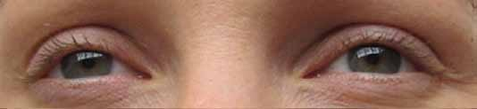
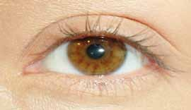
Hair & Scalp Predictors
18. Hair Quality & Texture (Kesha/Shmashru/Loma)
To be examined without oil/gel. Touch and inspect scalp and body hair.Ref: Charaka Vimana 8/97, Sushruta 4/64.
19. Hair Color
Natural hair color. Rule out dye/henna by asking actual natural color.Ref: AH 3/85, 90.
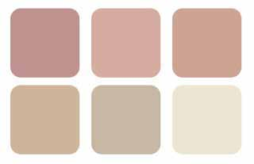
20. Kutila Kesha (Curly Hair)
Check for natural curly or strongly wavy hair.Ref: Sushruta Samhita Sharira Sthana 4/73.
21. Sheeghra Khalitya / Akalapalita (Hair Fall & Greying)
Significant loss (baldness) before 50 years, or greying (more than 20%) before 35 years.Ref: Sharangdhar Purva 6/64, Charaka Vimana 8/97.
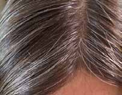
22. Hair Quantity / Density
Observe density of scalp hair and moustache (in males).Ref: Sharangdhar Samhita Purvakhand 6/63.
Teeth & Nails
23. Teeth Texture (Danta)
Examine the texture of teeth. Do they appear dry (Ruksha) or rough (Parusha)?Ref: Charaka Samhita Vimana Sthana 8/98.
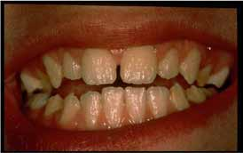
24. Teeth Size
Observe the size of teeth. Are they unusually small (Sukshma) or abnormally large (Atidanta)?Ref: Harita Samhita Pratham Sthana 5/18.
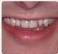
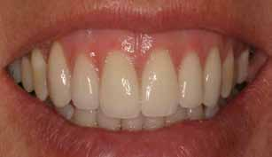
25. Nails Size & Thickness (Nakha)
Observe the size and thickness of nail beds.Ref: AS Sharira Sthana 8/6.
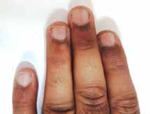
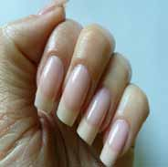
26. Nails Texture
Touch and observe nail beds. Are they dry (Ruksha) or rough (Parusha)?Ref: Charaka Samhita Vimana Sthana 8/98.
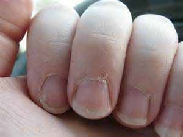
27. Nails Color
Examine the natural color of nail beds. Remove nail polish/henna beforehand.Ref: Sushruta Samhita Sharira Sthana 4/68.
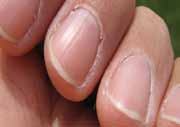
Physiological Traits & Functions
Functional predictors (7 Vata, 8 Pitta, 10 Kapha)
Gait & Activity
1. Gati (Gait & Step Quality)
Observe the participant walking. Druta/Chapala walk is very fast or quick initiation. Saara/Adhisthita is straight, consistent, and heel-strike first.Ref: Sushruta Sharira 4/65, Charaka Vimana 8/96.
2. Cheshta (Task Initiation Speed)
When assigned a task, what is the usual tendency?Ref: Charaka Samhita Vimana Sthana 8/96, 98.
3. Swara (Voice Quality)
Evaluate the natural tone, pitch and clarity of the participant's voice. Exclude cold/cough.Ref: Charaka Vimana 8/96, 98.
Metabolic: Appetite & Thirst
4. Appetite Frequency (Shighrakshuta)
Select your usual meal and refreshment pattern in a typical day.Ref: Charaka Samhita Vimana Sthana 8/97.
5. Appetite Quantity (Food Intake Quantity)
Estimate the total amount of food eaten daily. (Average: e.g. 6-10 chapattis, rice, dal, salad).Ref: AH Sharira Sthana 3/86, 101.
6. Appetite Tolerance (Tolerating Hunger)
Suppose you skip a meal, how do you tolerate it?Ref: AH Sharira Sthana 3/90, 96.
7. Eating Speed (Ahara Gati)
When eating with others, you usually finish:Ref: Charaka Samhita Vimana Sthana 8/96, 98.
8. Thirst Intensity & Reaction (Teekshna Trishna)
If you feel thirsty and water is not immediately available, how do you react?Ref: Charaka Samhita Vimana Sthana 8/97. Exclude: diabetes, salty food.
9. Thirst Quantity (Water/Fluid Volume)
How much water / liquids do you drink per day approximately?Ref: Charaka Vimana 8/96, 97.
10. Thirst Frequency (Shighra Pipasa)
How frequently do you drink water/fluids in a typical day?Ref: AS Sharira Sthana 8/9.
Excretion: Stool & Sweat
11. Bowel Habits (Prabhuta-Shrista Purisha)
Is bowel evacuation usually easy, satisfactory, quick, and of adequate quantity? Exclude IBS.Ref: Charaka Samhita Vimana Sthana 8/97.
12. Sweat Quantity (Sweda Matra)
How much do you sweat on exposure to sun, exercise or normal physical activity?Ref: Charaka Samhita Vimana Sthana 8/96, 97.
13. Sweda Gandha (Sweat Odour)
Do you have strong body odour, or has anyone commented on your sweat odour?Ref: Charaka Vimana 8/97, Sushruta Sharira 4/68.
Sleep & Dreams
14. Sleep Awakening (Jagaruka)
Are you easily awakened by minor noises, showing light sleep?Ref: Charaka Samhita Vimana Sthana 8/98.
15. Sleep Duration (Alpa Nidra)
How many hours do you usually sleep in a 24-hour cycle?Ref: AH Sharira Sthana 3/86.
16. Sleep Preference (Nidrapriya)
Do you love to sleep, taking naps in free time if given a chance?Ref: Harita Samhita Pratham Sthana 5/21.
17. Dream Themes (Swapna)
Do you often see and remember dreams? Select the most frequent theme you see.Ref: Sushruta Samhita Sharira Sthana 4/65, 69, 73.
Cognitive & Psychological Tests
Tests for memory, comprehension, intelligence, and temperament
Basic Traits
1. Indecisiveness (Anavasthita Atma)
After taking a decision, how often do you feel the need to change your decisions?Ref: Sushruta Samhita ShariraSthana 4/65.
2. Friendship Duration (Maitri / Sauhrida)
Do your relations with friends, relatives and neighbors last for a long time?Ref: Sushruta Sharira 4/65, 75, AH 3/102.
Smriti (Memory Retention Test)
Instructions: Read and memorize the following words. You will be asked to recall them at the end of this section to measure your delayed memory score.
5 Single Words
1. Mango (आम)
2. Night (रात)
3. Key (चाभी)
4. Car (गाड़ी)
5. House (घर)
5 Paired Associations
1. Day - Night (दिन - रात)
2. Sister - Brother (बहन - भाई)
3. Joy - Sorrow (सुख - दुःख)
4. Up - Down (ऊपर - नीचे)
5. Black - White (काला - सफेद)
✓ Words registered. Keep them in mind. The recall test is coming up.
Grahya Shakti (Comprehension Test)
This test measures immediate grasping speed and comprehension. You will read a short story. You have up to 2 minutes. Once you click "Show Questions" or the timer runs out, the story will hide and you will answer 10 questions. (60% or more correct is Shrutagrahi).
⏱️ Reading Time Left:120s
⚠️ The story is now hidden. Answer these 10 questions to test your comprehension:
Medha & Buddhi (Intelligence Tests)
Test 1: Spot the Differences (Attention/Nipunamati)Time: 3 Min
Compare the two drawings from the manual. Spot as many differences as you can.
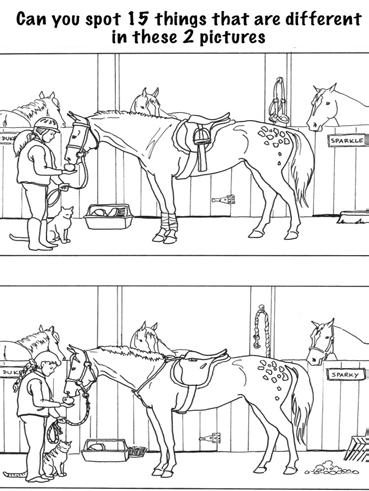
Test 2: Series Completion (Logical/Medhavi)Time: 3 Min
Establish the relationship between figures 1, 2, and 3. Select which figure from A, B, C, D, E completes the series.
Test 3: Four-Sided Shape Counting (Buddhiyukta)Time: 3 Min
Count the total number of four-sided shapes present in this diagram.
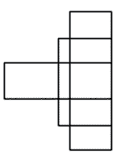
Smriti Recall (Delayed Memory Test)
Recall Phase: Select the words and paired associations that were presented to you at the beginning of this section. (Do not scroll up to look!).
Temperament & Swabhava
4. Temperament / Anger (Krodha)
What is your usual reaction if someone breaks a queue, and what is your family's opinion of your anger?Ref: Sushruta Samhita ShariraSthana 4/68, 73.
Behavioral Traits
Social and behavioral predictors (2 Vata, 3 Pitta, 3 Kapha)
Oration & Nature of Speech
1. Way of Talking / Nature of Speech
Nature of speech evaluated during the interview.Ref: Sharangdhar Purvakhand 6/63, Bhela Samhita Viman Sthana 4/24.
2. Profound Orator & Dominant Speaker
Can talk effectively at length on choice topics and/or dominates conversations during debates.Ref: Bhavaprakash Purva 4/56, Sushruta Sharira 4/69. Note: Max 1 mark to Pitta.
Often stand up for values despite criticism, and face extreme adversity bravely until the goal is achieved.Ref: Charaka Samhita Vimana Sthana 8/97, Sushruta Sharira 4/70.
4. Temperature Likings (Sheetabhilashi vs. Ushna Annapanakansha)
What type of food/drinks do you prefer in moderate seasons?Ref: AH Sharira Sthana 3/92, 100.
5. Strong Enmity (Dridhavaira)
Have differences with someone and never patched up because you rejected their attempt or never wanted to.Ref: Sushruta Sharira 4/72, AH 3/98.
6. Politeness & Humility (Vineeta)
Remain polite even in stressful conditions, and described by others as soft/submissive.Ref: AH Sharira Sthana 3/99.
Participant: Krish
Your Prakriti Constitution is
VATA - PITTA
Your constitution shows a dominance of Vata and Pitta doshas. This is a Sansargaja (Dvandvaja) Prakriti, representing a mix of active, mobile, and heat-oriented characteristics.
● Vata● Pitta● Kapha
● Vata Dosha35.4%
Weighted: 11.2Raw Score: 11/31
● Pitta Dosha42.1%
Weighted: 13.2Raw Score: 12/29
● Kapha Dosha22.5%
Weighted: 7.1Raw Score: 7/32
Ayurvedic Recommendations
Guidelines for maintaining health and balance according to your specific Prakriti constitution.